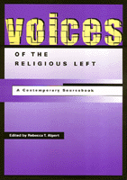

<body bgcolor="#FFFFFF" text="#000000" link="#0000FF" vlink="#CC0000" alink="#CC0000"><center><hr width="350" size="1" align="center" noshade>A collection of essays that demonstrate the vitality of current liberal religious thought<hr width="350" size="1" align="center" noshade><p><a href="https://cdcshoppingcart.uchicago.edu/Cart/ChicagoBook.aspx?ISBN=9781566397568&&PRESS=temple" target="_top">Buy this book!</a> | <a href="https://cdcshoppingcart.uchicago.edu/Cart/Cart.aspx?PRESS=temple" target="_top">View Cart</a> | <a href="https://cdcshoppingcart.uchicago.edu/Cart/Cart.aspx?PRESS=temple" target="_top">Check Out</a></p><p></p></center><!--none//--><h1>Voices of the Religious Left</h1>
<H2>A Contemporary Sourcebook</H2>
<h3>edited by Rebecca T. Alpert</h3>
<P>cloth 1-56639-756-1 $90.50, Apr 00, <FONT COLOR=#990033>Out of Stock Unavailable</FONT>
<br>paper 1-56639-757-X $38.95, May 00, <FONT COLOR=#990033>Available</FONT>
<br>Electronic Book 1-43990-101-5 $37.95 <FONT COLOR=#990033>Out of Stock Unavailable</FONT>
<BR> 304 pp
7x10
</P><BLOCKQUOTE><I>"[These essays] represent the power of the written word as a vehicle for advocacy and social change &#133. It is my hope that the readers of these essays will themselves feel compelled to think more about the importance of taking a stand on issues from religious perspectives, and to act on something that compels them."</I>
<BR>&#151<B>Rabbi Rebecca Alpert</B><I></I></BLOCKQUOTE>
<P>What has happened to the religious left? If there is a religious left, why don't we hear more about it?
<P>The academics and activists who write this rich volume, edited by Rebecca Alpert, argue passionately on topics that concern all of us. Quoting from the Bible, the Torah, the Qur'an, the teachings of Buddha, as well as Native American folklore, they make the voices of the religious left heard&#151teaching lessons of peace and liberation.
<P>As this invaluable sourcebook shows, the religious left is committed to issues of human rights and dignity. Answering questions of identity and ideology, the essays included here stem from the "culture wars" that have divided orthodox and liberal believers. Responding to the needs of and raised by marginalized social groups, the writers discuss economic issues and religious politics as they champion equal rights, and promote the teaching of progressive vision.
<P>Containing insightful perspectives of adherents to many faiths, <I>Voices of the Religious Left</I> makes it clear that there <I>is</I> a group dedicated to instilling the values of justice and freedom. They are far from silent.
<BR>&nbsp;<h2>Excerpt</h2><P>Excerpt available at <a href="http://www.temple.edu/tempress">www.temple.edu/tempress</a></p>
<BR>&nbsp;<h2>Reviews</h2>
<p><i>"...chock-full of politically engaged, theologically and textually grounded essays.... Many of the essays also provide serious spiritual ammunition.... </i>Voices<i> illuminates the ways some people have taken their sense of religious duty out into a broken world and infused their in-the-trenches </i>tikkun olam<i> with a relationship to the bigger picture. The magic here is both in the details and in the sweeping sense that we are all, in fact, working toward the same goals from, as somebody once said, a thousand points of light. Until we can get there, </i>Voices of the Religious Left<i> offers indispensable, high-octane edification and inspiration&#151just what we'll need along the way."</i>
<br>&#151<b>Danya Rutttenberg</b>, <i>LILITH</i>
<p><i>"Alpert's collection is of genuine service for understanding and engaging with contemporary perspectives of 'the religious left'..."</i>
<br>&#150<b><i>Nova Religio</i></b>
<p><i>"This book does a fine job of showing how the religious left can be part of religious belief, including for those who, for the most part, adhere to fairly traditional religious beliefs."</i>
<br>&#151<b><i>Journal of Church and State</i></b>
<BR>&nbsp;<h2>Contents</h2><P>
<p>Acknowledgments
<br>Introduction
<p><b>Part I: Making Progressive Religious Theology: Warrant for Progressive Religious Thought and Action</b>
<br>1. Renewing the Heart of Faith: A Prophetic Convergence of the People of God &#150 Jim Wallis
<br>2. Womanist Theology: Black Women's Voices &#150 Delores S. Williams
<br>3. Theology as a Public Responsibility &#150 Richard A. McCormic, S.J., and Richard P. McBrien
<br>4. Reflections from a Latin American Theologian &#150 Gustavo Gutierrez
<br>5. Canaanites, Cowboys, and Indians: Deliverance, Conquest, and Liberation Theology Today &#150 Robert Allan Warrior
<br>6. Re-imagining God: Reflections on Mirrors, Motheroot, and Memory &#150 Rita Nakashima Brock
<br>7. Martin Luther King and the Future of America &#150 Vincent Harding
<p><b>Part II: Focusing on the Issues</b>
<p>ALTHOUGH SUFFERING IS LIMITLESS, I VOW TO END IT (The Boddhisatva Vow)
<br>8. The Skewing of America: Disparities in Wealth and Income &#150 Ronald D. Pasquariello
<br>9. Poverty, Women, and Reproduction: Welfare Reform and Social Justice &#150 A position paper of Catholics for a Free Choice
<br>10. Jews, Money, and Social Responsibility &#150 Lawrence Bush and Jeffrey Dekro
<br>11. Option for the Poor: Preference or Platitude? &#150 Thomas J. Paprocki
<p>THE EARTH IS THE LORD�S (Psalm 24:1)
<br>12. The Greening of Buddhist Practice &#150 Kenneth Kraft
<br>13. The Theological Basis of Animal Rights &#150 Andrew Linzey
<br>14. From Compassion to Jubilee &#150 Arthur Waskow
<p>AM I MY BROTHER�S KEEPER (Genesis 4:9)
<br>15. Apartheid as Idolatry &#150 James H. Evans
<br>16. Pesach and the Palestinians &#150 Arthur Waskow
<br>17. The Martyrs' Living Witness: A Call to Honor and Challenge &#150 Daniel Berrigan
<br>18. Back to the Dust: How I Rediscovered the Power of Scripture &#150 Barbara Holmes
<br>19. Catholics and Colonialism: The Church's Failure in Rwanda &#150 Todd Salzman
<p>PROCLAIM LIBERTY THROUGHOUT THE LAND (Leviticus 25:10)
<br>20. The Full Circle of Liberation: An American Indian Theology of Place &#150 George Tinker
<br>21. The Upward Mobility of the Gospel &#150 Helen Prejean
<br>22. Between Brick and Steel &#150 Mumia Abu-Jamal
<br>23. Release the Prisoners! &#150 Eliezer Valent�n-Casta��n
<br>24. Free Speech in Pauline Political Theology &#150 David Fredrickson
<p>THERE IS NEITHER MALE NOR FEMALE FOR YOU ARE ALL ONE (Galatians 3:28)
<br>25. The Worth of a Woman &#150 Laila Al-Marayati
<br>26. Violence against Women: The Theological Dimension &#150 Mary Pellauer
<br>27. In God's Image: Coming to Terms with Leviticus &#150 Rebecca T. Alpert
<br>28. Homosexuality: Challenging the Church to Grow &#150 John J. McNeill
<br>29. Searching Scripture for a Model of the Family &#150 Rosemary Radford Ruether
<br>30. The <I>New York Times</I> Ad: A Case Study in Religious Feminism &#150 Mary E. Hunt and Frances Kissling
<br>31. Antiabortion / Prochoice: Taking Both Sides &#150 Helen Tworkov
<p><b>Part III: Building Bridges: Know One Another</b>
<br>32. Difference Is No Excuse for Hatred &#150 Diana Eck
<br>33. A Case Study: American Christians, Jews, and Muslims Working Together for Middle East Peace &#150 Ronald J. Young
<br>34. Reconsidering Christopher Columbus and the Recovery of a Biblical Theology of Mission &#150 Wi Jo Kang
<br>35. The Church's False Witness against Jews &#150 Carl D. Evans
<br>36. Arena for Interaction &#150 Lee Ranck
<p>About the Contributors
</P><BR>&nbsp;<H2>About the Author(s)</H2>
<table><tr><td valign="top"><img src="/tempress/authors/1446_au.gif" height="90" width="75"></td><td width="100%" valign="middle"><p><B>Rebecca T. Alpert</B> is Assistant Professor of Religion and Women's Studies, Temple University. She is the author of <I>Like Bread on the Seder Plate: Jewish Lesbians and the Transformation of Tradition</I>, and the co-author of <I>Exploring Judaism: A Reconstructionist Approach</I>.</P></td></tr></table>
<P>Contributors: Jim Wallis, Delores S. Williams, Richard A. McCormick, S. J., Richard P. McBrien, Gustavo Gutierrez, Robert Allan Warrior, Rita Nakashima Brock, Vincent Harding, Ronald D. Pasquariello, Catholics for a Free Choice, Lawrence Bush, Jeffrey Dekro, Thomas J. Paprocki, Kenneth Kraft, Andrew Linzey, James H. Evans, Arthur Waskow, Daniel Berrigan, Barbara Holmes, Todd Salzman, George Tinker, Helen Prejean, Mumia Abu-Jamal, Eliezer Valent�n-Casto��n, David Fredrickson, Laila Al-Marayati, Mary Pellauer, John J. McNeill, Rosemary Radford Ruether, Mary E. Hunt, Frances Kissling, Helen Tworkov, Diana Eck, Ronald T. Young, Wi Jo Kang, Carl D. Evans, Lee Ranck, and the editor.</P>
<BR><H2>Subject Categories</H2>
<p><A HREF="/tempress/religion.html" TARGET="_top">Religion</a>
</p>
<p align="center"><a href="https://cdcshoppingcart.uchicago.edu/Cart/ChicagoBook.aspx?ISBN=9781566397568&&PRESS=temple" target="_top">Buy this book!</a> | <a href="https://cdcshoppingcart.uchicago.edu/Cart/Cart.aspx?PRESS=temple" target="_top">View Cart</a> | <a href="https://cdcshoppingcart.uchicago.edu/Cart/Cart.aspx?PRESS=temple" target="_top">Check Out</a></p><p><font face="Arial" size="1"><a href="copyright.html" onMouseOver="window.status='Web Copyright Policy';return true;" onMouseOut="window.status=''" title="Web Copyright Policy">&copy;</a> 2015 <a href="http://www.temple.edu" target="new" onMouseOver="window.status='Link to Temple University home page';return true;" onMouseOut="window.status=''" title="Link to Temple University home page">Temple University</a>. All Rights Reserved. http://www.temple.edu/tempress/titles/1446_reg.html</font></p>